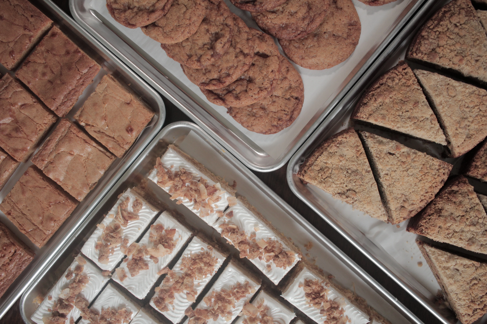

Elizabeth is a Pastry Chef in New York City and was classically trained at the International Culinary Center before its merger with the Institute of Culinary Education. Her pastry prowess has earned her roles in the kitchens of Locanda Verde, L’Artusi, Raf’s, and most recently, Atelier Ariana.
Born and raised in Queens, Elizabeth is a part of the vibrant Dominican community that calls Corona their home. Unsurprisingly, Dominican cuisine has an influence on the recipes that she develops. However, living in the most diverse area (arguably) of the world there are other cuisines that sneak their way into her recipes as well.
Elizabeth continues to call Queens her home, where she lives with her husband and their 15 year old morkie Chewy. When she’s not baking she’s thinking about baking, playing video games, doing yoga, or listening to her favorite k-pop group (Where the Stays at!?)
We'll be at Sanger Hall for the Mother's day market! Aside from our pastries you can find a full list of vendors on their instagram
If you know of any markets we should go to, let us know in the contact form below!
